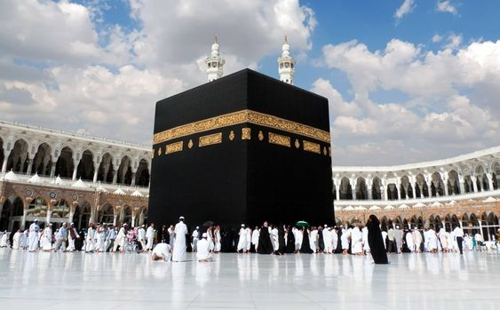

Hajj is one of the five pillars of Islam, thereby it is mandatory for all Muslims to perform it at least once in their lifetime, provided they are financially and physically able to do so. It is a pilgrimage performed by Muslims to the Holy city of Makkah, in the month of Dhul-Hijjah (the last month of the Islamic calendar). The end of the pilgrimage is marked by the Muslim festival of Eid-ul-Adha when Muslims all over the world sacrifice animals (under the outlined conditions) according to their financial capability. There are several Ayah present in the Quran which provides us with guidance as to how to perform Hajj. One of the surah is Surah Al-Baqarah. >
ٱلْحَجُّ أَشْهُرٌ مَّعْلُومَٰتٌ ۚ فَمَن فَرَضَ فِيهِنَّ ٱلْحَجَّ فَلَا رَفَثَ وَلَا فُسُوقَ وَلَا جِدَالَ فِى ٱلْحَجِّ ۗ وَمَا تَفْعَلُوا۟ مِنْ خَيْرٍ يَعْلَمْهُ ٱللَّهُ ۗ وَتَزَوَّدُوا۟ فَإِنَّ خَيْرَ ٱلزَّادِ ٱلتَّقْوَىٰ ۚ وَٱتَّقُونِ يَٰٓأُو۟لِى ٱلْأَلْبَٰبِ
"Hajj is [during] well-known months, so whoever has made Hajj obligatory upon himself therein [by entering the state of ihram], there is [to be for him] no sexual relations and no disobedience and no disputing during Hajj. And whatever good you do - Allah knows it. And take provisions, but indeed, the best provision is fear of Allah. And fear Me, O you of understanding."
Source : This!